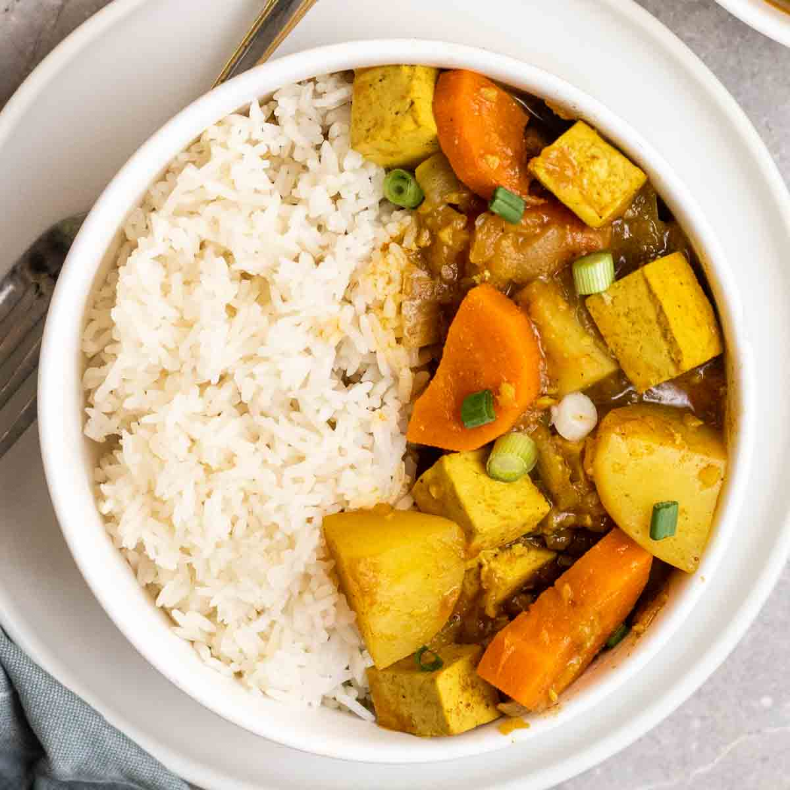

Vegan Japanese Tofu Curry

Description
This recipe is one of my all time favorites! It's super filling and tasty, perfect for a cold night or for after a tiring day where you need something simple to make.
I made this recipe after discovering a box of Golden Curry at my local asian market and could not for the life of me find a simple vegan recipe
like the non-vegan ones on the back of the box... So I made one myself!!
I pass this recipe on with love, in hopes that it can bring some comfort and nourishment for others.
召上がれ!
Serves: 4
Prep time: 15 min
Cook time: 20 min
Ingredients
- 2 carrots, peeled and sliced into circles
- 1 large potato, washed and largly diced
- 1 large yellow onion, halved and cut into wedges
- 1 clove of garlic, minced or grated
- 2 1/4 cups of water
- 1 1/2 tbsp of veggie bouillon (or other plant based bouillon of choice)
- 1 tbsp of agave or maple syrup
- 400g of pressed and diced firm tofu
- 1 portion of a boxed curry mix (S&B Golden Curry is recommended** but other mixes such as House Java or homemade roux work as well)
- Powdered ginger/salt/pepper to personal taste
- 3 tbsp of a neutral oil
- Jasmine rice to serve (I recommend following this video tutorial to make the perfect rice!)
Steps
- While your tofu is pressing, heat 2 tbsp of oil in a large pot on medium high heat and add in your carrots, potato and onion; season with some salt, pepper and ground ginger to your taste.
- Mix and fry until the veggies have a good color (about 5-7 minutes)
- Add garlic, water, syrup and bouillon to the pot with the veggies and bring to a simmer
- Once brought to a simmer, cover the pot and place on low heat for 15 minutes.
- On a separate burner, heat the remaining oil in a pan on medium-high heat and add in your diced tofu; season with powdered ginger, salt and pepper to your liking.
- Fry the tofu until it is browned on all sides (8-10 minutes), add more oil if needed.
- Once 15 minutes has passed for your veggies, turn off the heat and add in your curry blocks.
- Stir your curry mixture until the blocks have melted and add in your tofu
- Turn back on your burner and simmer for about 5 minutes more on medium heat
- Serve over rice!
**1 portion of S&B Curry roux should equal one small package and split into 4 equal blockss